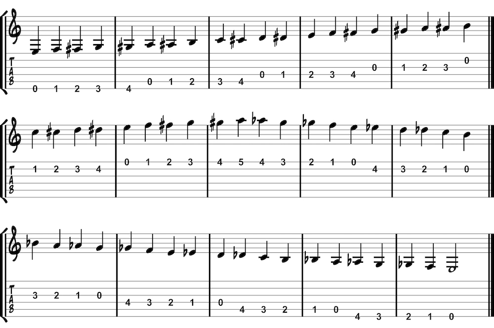

While the musical alphabet contains seven letters, the musical language contains twelve notes. We find these twelve notes from the seven letters of the musical alphabet and their respective sharps and flats. An enharmonic is when a note can be called more than one name, such as F-sharp and G-flat. The chromatic scale contains all twelve notes of the musical language and can start from any note. Try playing it from each open string.
The chromatic scale can also be played in each position. Here is the open position:
